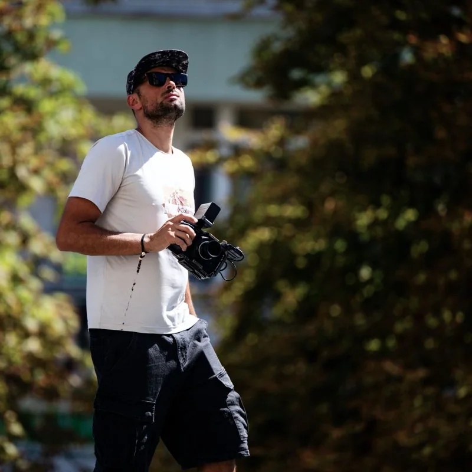
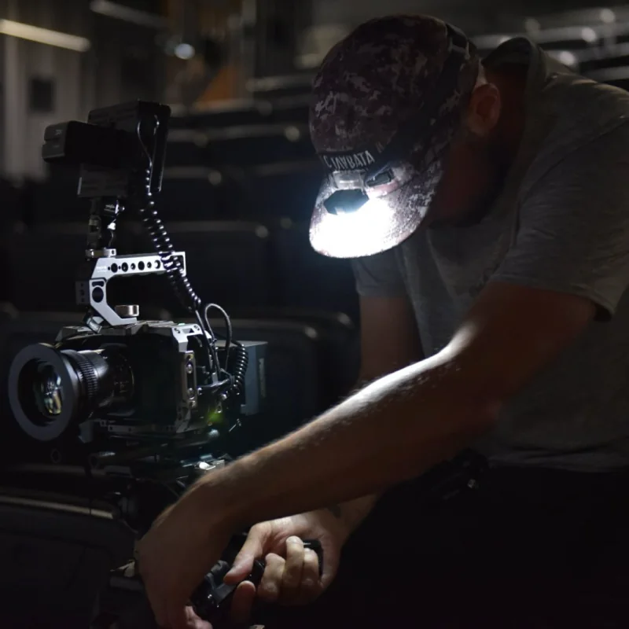
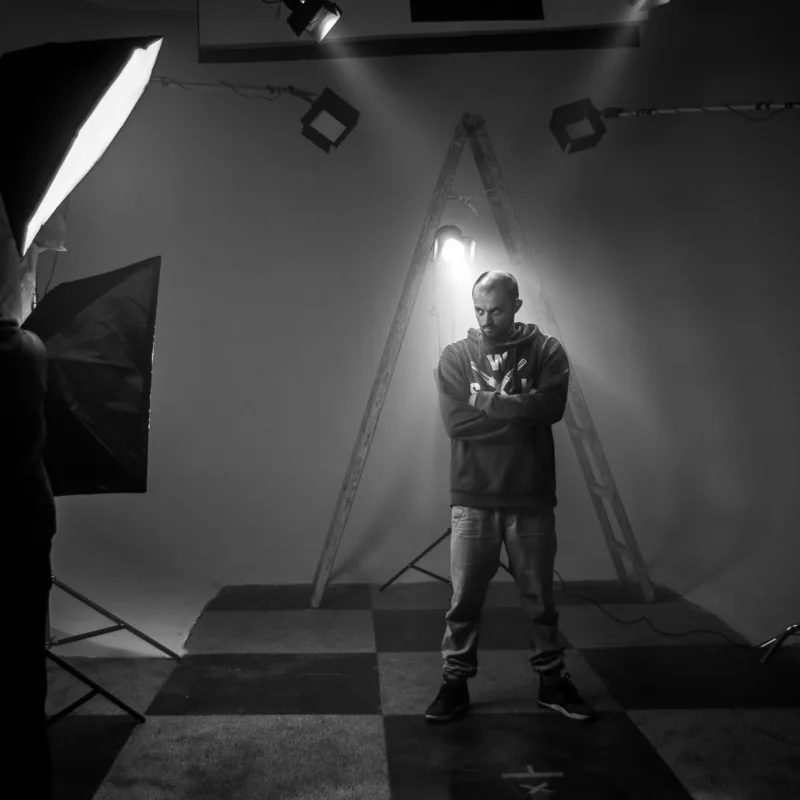
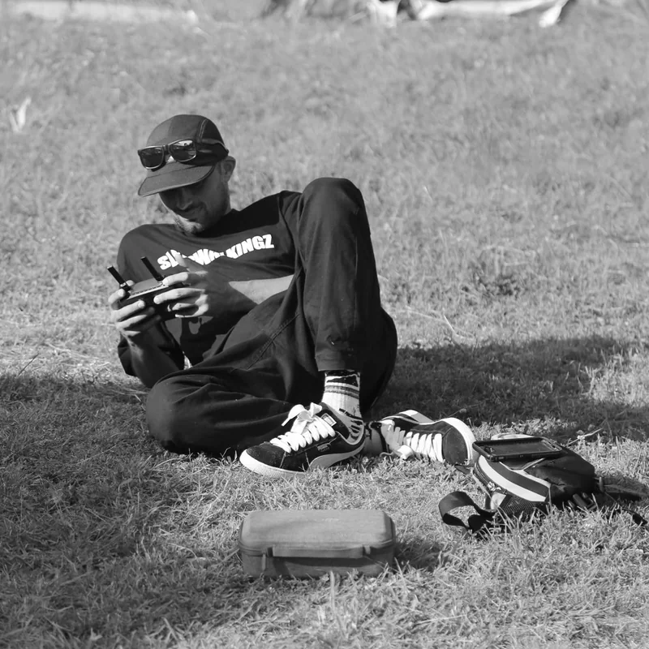
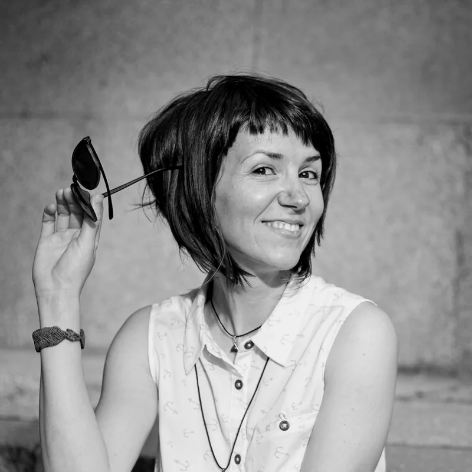
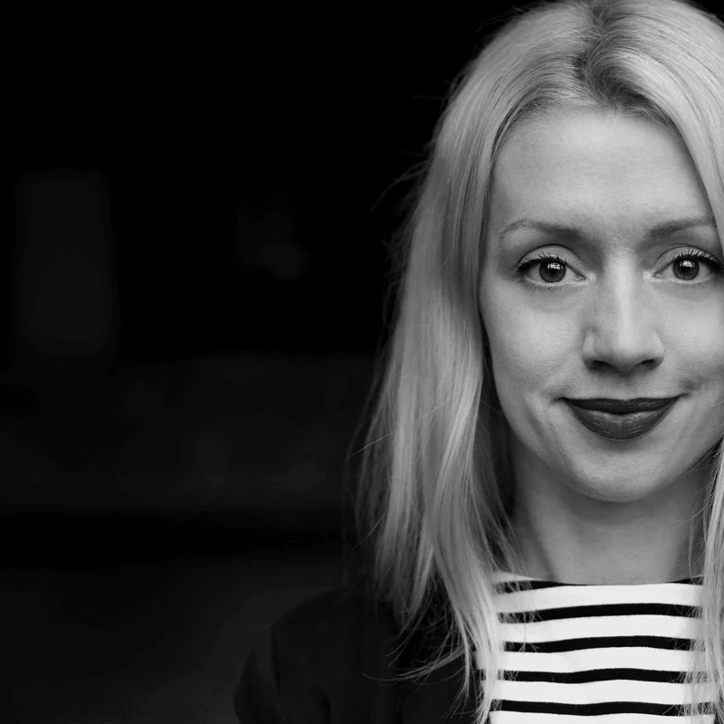

Documentary Films
Human stories for artists, NGOs and cultural organizations.
Independent video production.
Independent video production for documentaries, music videos, cultural projects, festivals, dance, theatre and commercial work — crafted in Bulgaria, working worldwide.
Showreel
A short glimpse into documentaries, stages, music, festivals and people.
Approach
A lean process for video work that stays close to the subject.
How we work
Selected Work
Selected films from documentaries, dance and theatre, music videos, festivals and cultural projects.
Services
Video work for artists, organizations, musicians, performers and independent teams.
Human stories for artists, NGOs and cultural organizations.
Focused video pieces for brands, campaigns and organizations.
Visual pieces for musicians, releases and independent creative projects.
Recaps and aftermovies that preserve the energy of live events.
Video work for stage, movement, performance and rehearsal processes.
Shaping raw material into rhythm, structure and story.
About
Founded by filmmaker Kostadin Ekzarov, EKZPERIMENTAL is an independent creative studio based in Bulgaria, producing documentary films, branded content, music videos and cultural projects for artists, organizations, festivals and independent teams in Bulgaria and worldwide.
With a background in Directing, Choreography, Visual Arts and Advertising, Kostadin combines storytelling, editing and visual design to create thoughtful films that connect with people. Alongside client work, he is the Founder of EKZPERIMENTAL Creative House and Co-Founder of JAM ON IT Festival and Flava House.




What it’s like working together

Working with Kostadin Ekzarov and Ezkperimental is far from an experiment - it is a privilege. From the very beginning, Kostadin brings creativity, professionalism, and an exceptional eye for visual storytelling to every project.
His attention to detail and commitment to excellence are evident in every frame. He has a remarkable ability to transform ideas into compelling visual narratives that not only capture attention but also take the viewer on an emotional journey.
What truly sets Ezkperimental apart is the dedication to achieving the highest quality while making the entire creative process smooth, collaborative, and enjoyable. He consistently exceeds expectations, delivering stunning results that elevate the final production and leave a lasting impression.
I can wholeheartedly recommend Kostadin Ekzarov and Ezkperimental to anyone looking for outstanding video production and cinematic storytelling. Having him as part of your team is not just an advantage - it is a genuine privilege.

Kostadin demonstrated a high level of professionalism throughout every stage of our collaboration, from pre-production and filming to the post-production process. He works in an organized and reliable manner, consistently meets deadlines, and maintains clear and timely communication throughout the entire project.
One of his greatest strengths is his ability to recognize the dramatic essence of an event and translate it into a compelling visual narrative. The films and trailers he creates go beyond simple documentation-they communicate a cohesive artistic vision that reflects the identity and objectives of each project.
Kostadin is proactive, contributes thoughtful creative ideas and solutions, and at the same time works seamlessly within project requirements while responding constructively to feedback. He demonstrates exceptional attention to detail, precision in editing, and a strong sense of pacing, rhythm, and emotional impact.
During our collaboration on filming stage performances, as well as creating trailers for Dancing Play and the 2Touch dance programme, Kostadin consistently delivered work of a high professional standard. His commitment to quality and dedication to achieving the best possible result were evident throughout the entire process.
I consider Kostadin to be a reliable, responsible, and highly creative professional. I would confidently recommend Kostadin Ekzarov as a videographer and video artist for projects that require a combination of technical expertise, artistic sensitivity, and a professional approach.

Working with Kostadin Ekzarov (Ekzarka) has been an absolute pleasure. We have collaborated on several projects, and every time he has exceeded my expectations.
Kostadin is far more than a professional videographer and editor - he is a visual storyteller. To me, his videos are genuine works of art. He has an exceptional eye for detail, movement, expressions, and emotion, and he captures the true atmosphere and energy of every event. By skillfully combining different cameras, lenses, and equipment, he creates cinematic visuals that feel both authentic and captivating.
What impresses me even more is his editing. He has a remarkable ability to make completely different shots flow together seamlessly, creating a natural rhythm that keeps the viewer engaged from beginning to end. Every transition feels intentional, and every frame serves the story.
Beyond his creative talent, Kostadin is incredibly professional. He is precise, reliable, and consistently delivers on time - often even ahead of schedule. Communication is always smooth, and you can count on him to approach every project with dedication and attention to detail.
I wholeheartedly recommend Kostadin to anyone looking for outstanding video production. Working with him is inspiring, effortless, and truly rewarding.
Partners
Long-running work across street art, performance, cultural programs and independent creative projects.
Contact
Let's make it together.
Available for documentaries, commercial productions, music videos, festivals, dance, theatre and cultural collaborations.
Every project starts
with a conversation.